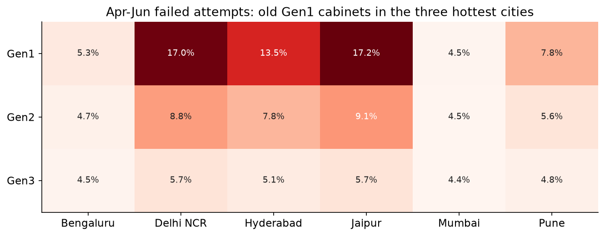
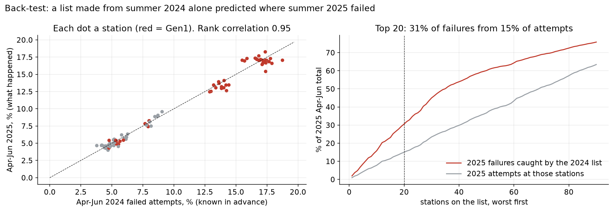
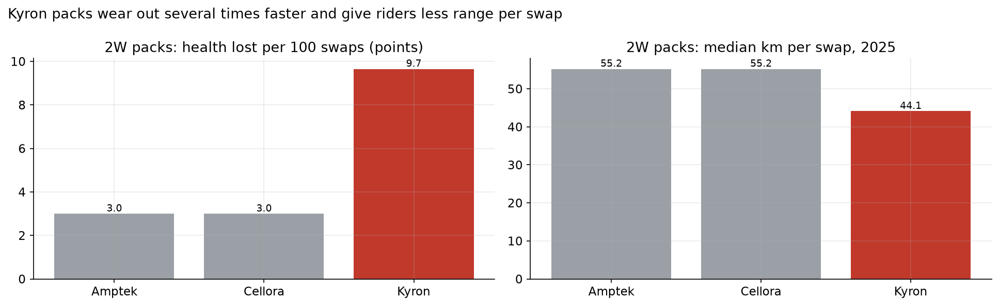
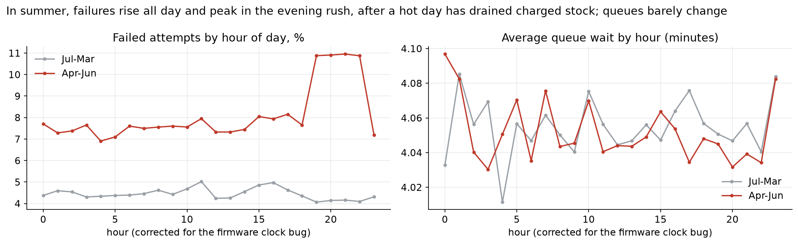
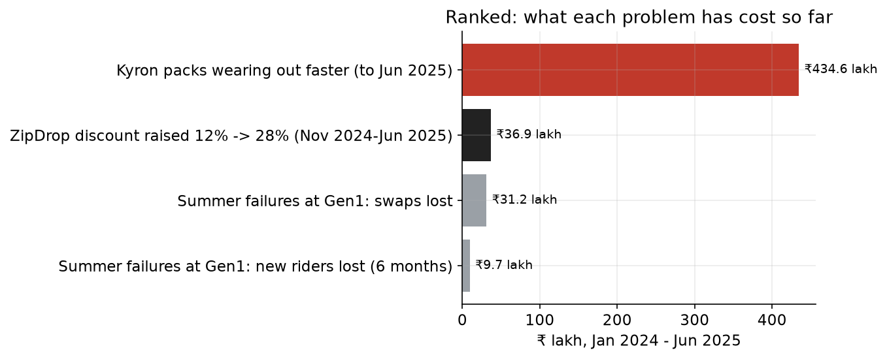

Twenty swap stations will fail again next summer. This report names them and says what VoltRelay should fund instead of more stations.
Dhiraj Kavuri · Gradient Learnings Data Analytics Hackathon · 15 November 2026
Every April to June, VoltRelay's oldest swap cabinets (Gen1) in Jaipur, Delhi NCR and Hyderabad overheat, charge slowly and run out of charged packs. Riders get turned away, and new riders who hit failed swaps early are the most likely to leave. It happens at the same stations every year. A list built only from summer 2024 data predicted summer 2025 station by station (rank correlation 0.948 across 90 stations). The 20 worst stations of 2024 produced 30.6% of summer 2025's failed attempts while handling 15.0% of attempts.
The 60 stations VoltRelay opened in its two expansion waves did not fix this. They were spread across all six cities, and the same 20 stations failed at 17.3% of attempts in summer 2024 and 17.0% in summer 2025.
Margins have a different cause. The cost per swap that rose most was battery wear from the new supplier, Kyron: its 2W packs lost health more than three times as fast as the others, cost ₹4.35 crore in extra wear, and were all written off on 15 June 2025. The largest fleet partner, ZipDrop, is the least profitable per swap after its discount rose from 12% to 28%.
What to fund, in order:
VoltRelay runs unmanned battery-swap cabinets for gig and logistics riders in six Indian cities. Between January 2024 and June 2025 completed swaps grew 2.93 times and revenue 3.18 times, but failed attempts grew 5.98 times, new-rider retention fell in some cohorts, and margin per swap came under pressure. Leadership is about to choose between four budget proposals: more stations, more batteries, a network-wide pricing rollout, and a long-term exclusive with ZipDrop.
The data has one row per swap attempt, completed or not, so a failure rate here is non-completed attempts divided by all attempts. Five changes happened during the period, and each has to be separated from the others: two expansion waves, a base price change in July 2024, a peak/off-peak pilot in Bengaluru and Pune from October 2024, the Kyron supplier, and the ZipDrop contract amendment on 1 November 2024.
We checked all nine documented issues and found six more. Every issue, the rows it affects, what we did and what it changes is in the notebook (section 2) and in outputs/cleaning_table.csv. The ones that change a result:
| Issue | Rows | What we did | Effect |
|---|---|---|---|
| Test stations (documented as "zero-value") | 62,031 | Excluded | They actually charged ₹39.3 lakh; keeping them overstates revenue |
| Firmware v3.2.0 clock 5h30 early, 10 Mar-14 Apr 2025 | 139,490 | Shifted back | Share of those swaps logged between midnight and 5 AM falls from 15.6% to 2.9%, matching the 3.0% elsewhere |
| Offline-sync near-duplicates | 1 | Searched three ways; nothing to remove | All 591,114 offline_batch rows kept |
| Odometer resets | 7,814 negative, 7,712 over 300 km | Set to missing | Range figures not distorted |
| City spellings | 585 riders, 21 spellings | Mapped to 6 cities | No phantom cities |
| CSAT missing more often for slow tickets | 28,871 tickets without a score | Re-weighted by resolution time | Naive 3.56 vs re-weighted 3.56: bias real but small here |
| Not documented: payment_mode is the same on every row | 3,877,013 | Not used | Payment channel cannot be analysed |
| Not documented: packs issued before their ledger commission date | 1,011,084 | Pack age measured from first observed swap | Ledger dates are unusable for battery age |
| Not documented: Kyron packs issued after their retirement date | 36,277 | Kept, reported as an operations finding | "Retired" packs were still in riders' hands |
After excluding test stations, 3,814,982 attempts remain, 94.02% completed.
| Question | Method |
|---|---|
| How has the network performed? | Monthly trends; contribution margin per swap = revenue minus grid energy, battery wear and station rent and upkeep |
| Where and when does service fail? | Failure rates by hour (clock-corrected), season, vehicle class, station; concentration |
| Why do stations fail? | Hourly cabinet telemetry linked to swap attempts in the same station-hour |
| Do equipment cohorts stand out? | Health loss per swap and km per swap by supplier and lot, measured from each pack's own swaps |
| What did pricing and contracts do? | Difference-in-differences for the pilot against the four other cities; partner margin per swap |
| Why don't new riders return? | Churn on days 30-60 after the first swap; logistic regression with controls; share of churn each factor accounts for |
| Will it happen again? | Back-test: rank stations on summer 2024 only, check against summer 2025 |
The notebook computes every number in this report and writes it to facts.json. A script fails if the report quotes a number that is not in that file, and separate tests re-derive the headline numbers with their own queries.
Outside April to June, all three charger generations fail on about 4.3% of attempts. In April to June, Gen1 fails on 12.9%, Gen2 on 5.8% and Gen3 on 5.1%. By city, Jaipur (14.0%), Delhi NCR (12.6%) and Hyderabad (10.8%) lead. 36 of the 51 Gen1 stations are in those three cities.

At a cabinet temperature of 45°C or more, a Gen1 cabinet's average charge time rises from 88 to 156 minutes and it has no charged 2W pack in 37.3% of those hours (0.6% when cool). Gen3 cabinets reach the same temperatures and still charge in 43 minutes. In station-hours with no charged pack, 11.6% of attempts fail, against 5.9% when packs are in stock. Summer failures peak in the evening rush (10.9% from 7 to 10 PM against 7.5% the rest of the day), after a hot day has drained stock.
Station by station, summer 2024 predicts summer 2025 (rank correlation 0.948, Kendall 0.798). The 2024 worst 20, all Gen1 in Jaipur and Delhi NCR, failed at 17.3% then 17.0% even though their summer attempts grew from 96,970 to 146,813. The three hottest cities had 73% of summer 2024's failures but received 50% of the new stations.

New riders whose first 14 days had more than 20% failed attempts left at 33.2% (n=651), against 13.3% for those with none (n=6,930). With controls, every 10 points of early failure rate multiplies the odds of leaving by 1.41. Two factors are primary: early failures (16.4% of churned new riders) and being on a partner-billed plan (odds 1.83 times higher; 25.0% of churn). Kyron packs (5.9%) and a summer start (4.3%) are secondary. Queue time is not significant.

Kyron 2W packs lost 9.65 health points per 100 swaps against 2.99 for Cellora and 3.00 for Amptek, gave a median 44.1 km per swap against 55.2, and all 1,385 were retired at 60.5% health. Their extra wear cost ₹4.35 crore. The "other" ticket category is battery complaints filed as vehicle problems: 33.5% of those tickets name a Kyron pack, the same as low-range tickets (34.2%) and far above billing disputes (14.1%).

The pilot moved 3.1 points of swaps out of peak hours and added ₹5.41 per swap against the other cities; peak-hour failures did not fall (+0.57 points, not significant). ZipDrop's revenue per swap fell from ₹59.60 to ₹48.65 after its amendment, ₹36.9 lakh in 8 months, and in 2025 it had the lowest margin per swap of any partner.

The charts for each insight sit next to it above. These cover the network as a whole; all charts are also in the notebook and in outputs/charts/.





52,987 extra failed attempts at Gen1 across the two summers. In 92% of failed attempts the rider did not complete a swap anywhere in the next two hours, so about ₹31.2 lakh of swaps were lost outright. The churn model attributes 98 lost new riders to early failures that happened at Gen1 in summer, worth ₹4.8 to ₹19.4 lakh depending on whether a rider is worth 3 or 12 months of revenue.
Ranked by money lost to date: Kyron extra wear ₹4.35 crore; ZipDrop amendment ₹36.9 lakh; summer swaps lost ₹31.2 lakh; new riders lost ₹9.7 lakh (6 months each).
Revenue per swap rose (₹59.89 to ₹64.77 between the first halves of 2024 and 2025), energy per swap fell (₹21.57 to ₹18.14) and station costs per swap fell with scale (₹18.06 to ₹11.68). Battery wear per swap rose from ₹38.64 to ₹54.16 when Kyron packs entered service. Whether margin per swap fell overall depends on when a pack must be replaced, which the data does not say: at 70% health it went from -₹18.39 to -₹19.21; at 60% it improved; at 80% it fell further. Wear per swap rose under every threshold.
| # | Proposal | Verdict | Do this | Owner | Effect | Confidence |
|---|---|---|---|---|---|---|
| 1 | More stations | Not as proposed | Swap the Gen1 cabinets on the April list for Gen3 in place, worst first, before 1 April 2026 | Head of Network Ops | The listed 20 stations face 19,311 excess failed attempts at 2025 volume; the upgrade pays back in one summer if it costs under ₹1.1 lakh per station, and every following summer adds the same again | High (back-tested) |
| 2 | More batteries | Yes, as replacement | Stop issuing retired Kyron packs now; replace the Kyron 2W fleet; claim on lots KY-2407/08/09 | Head of Fleet & Procurement | About ₹4.43 crore at current pack prices, against ₹4.35 crore of extra wear in the 10 months Kyron was in service | High |
| 3 | Network-wide pricing | Yes for revenue, not for service | Roll out city by city; measure each city against the others as in the pilot | Head of Pricing | About ₹5.41 more per swap | Medium (6 cities) |
| 4 | ZipDrop exclusive | No | Reopen the contract: bring the discount toward the 12% it had and add the peak surcharge | Head of Partnerships | Up to ₹10.95 per ZipDrop swap | High |
All 20 are Gen1 launch stations: 12 in Delhi NCR and 8 in Jaipur. 17 of them were also on the 2024 list. 18,865 riders used them in summer 2025. The full ranked list with expected failed attempts per station is in outputs/april_2026_list.csv.
STN-DEL-048, STN-JAI-141, STN-DEL-035, STN-DEL-033, STN-JAI-139, STN-DEL-045, STN-DEL-039, STN-JAI-136, STN-DEL-036, STN-JAI-142, STN-DEL-040, STN-JAI-138, STN-DEL-043, STN-JAI-135, STN-JAI-134, STN-DEL-038, STN-DEL-037, STN-JAI-137, STN-DEL-047, STN-DEL-050.
An AI coding assistant (Claude) helped write queries and code, draft text and search public sources. Every number was checked outside the AI's own reasoning: the notebook writes each number to facts.json, separate tests re-derive the headline numbers with independent queries, a fresh re-derivation from the problem statement alone confirmed the key facts, and a script fails if this report quotes a number not in facts.json. Two AI mistakes were caught this way: a first version of the pilot's peak hours, and blank pack IDs read as text. The judgement calls (replacement threshold, value of a lost rider, the break-even framing) are ours and are stated above.